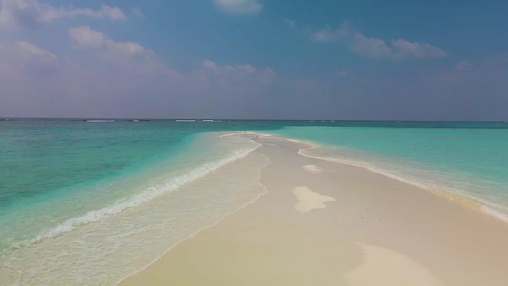
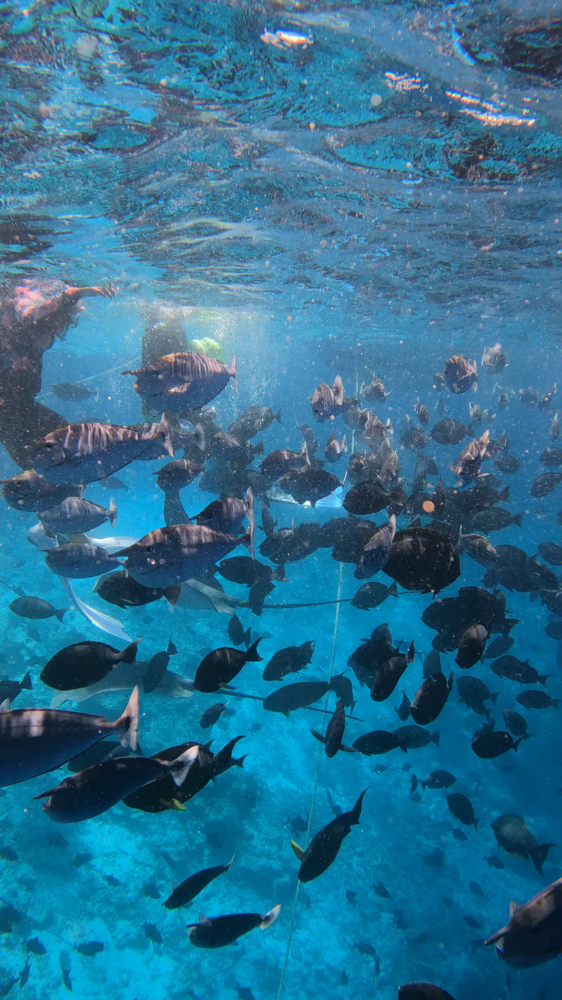

关于这条行程
Fish Tank、一片白色沙洲，以及一段寻找海豚的归程。
美好一天的精简版。直奔 Fish Tank，在沙上停留一小时，然后一路留意海豚返航。
4小时时长
12人数
09:00出发
13:00返回
行程当天
一天怎么走
时间仅供参考。最终航线由船长在当天早晨根据潮汐、风与光线确定。
- 09:00胡鲁马累
从码头出发。
- 09:30Fish Tank
在清澈的水中与热带鱼一同浮潜。
- 11:00沙洲
白沙、浅水，以及游泳的时间。
- 12:00海豚航段
缓慢返航，沿途留意海豚群。
- 13:00胡鲁马累
靠泊。
已包含
- 出海行程
- Fish Tank 浮潜
- 沙洲停留
- 游泳与休息
- 返回胡鲁马累的海豚航段
不包含
- 酒类，除非行程另有说明
- 非潜水行程中的潜水装备
- 行程页面所列的附加服务
- 小费

同样出海